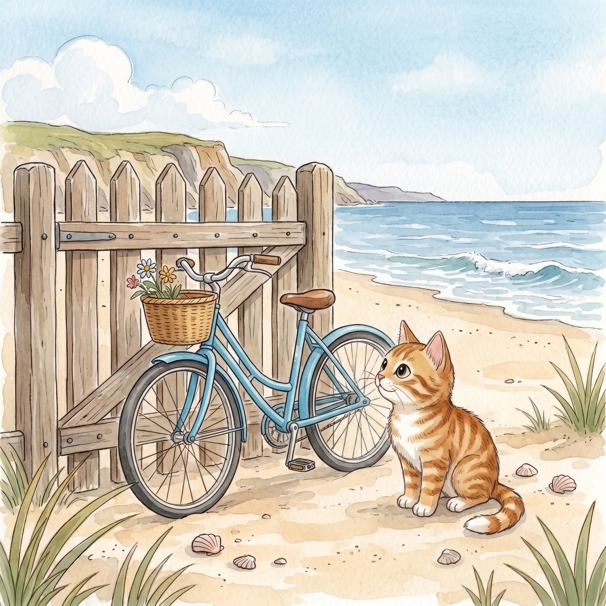

Step 1 · Say the Sound
i_e
In bike, the quiet e helps i say its name.
bike
ride
smile
Read one gentle story with Magic E. A quiet e can help the vowel say its name, like in bike.

In bike, the quiet e helps i say its name.
A bike is by the gate.
Beach Cat sees the bike.
The bike can ride.
Beach Cat will not ride.
Beach Cat can smile.
He sits by the gate.
Now you read Magic E words like bike.
That’s a win.
If it still feels fun, read the story again.